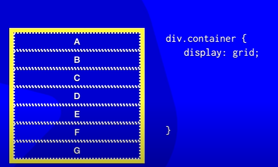
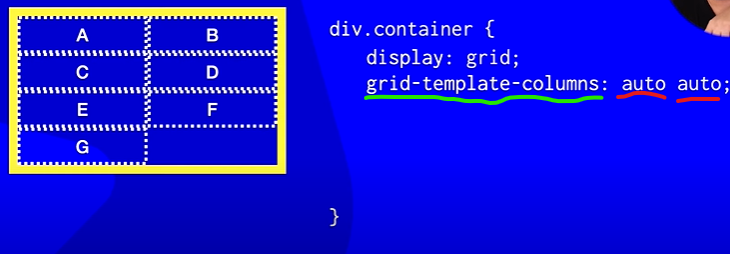
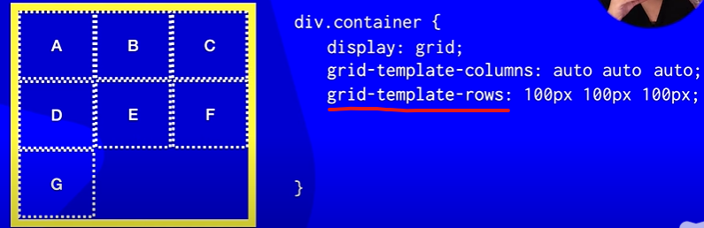
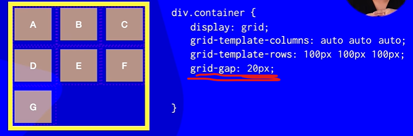

Para transformar um componente em Grid é só colocar a propriedade Display: grid; e ele automaticamente ira virar um grid conteiner e tudo que tiver dentro dele sera os grid itens, EX:
Porém com essa configuração (CSS) nada mudara pois por padrão ficara uma coluna com varias linhas
Essa propriedade define o número das colunas, se apos o auto tivesse mais um auto seriam tres colunas.

Define o tamanho das linhas
Define o espaço entre itens.
